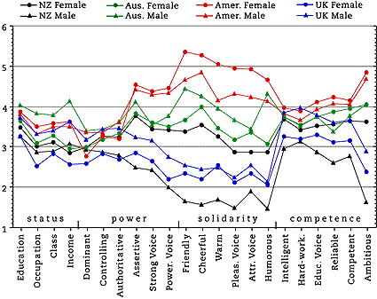
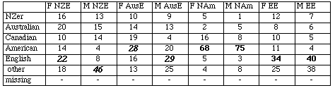

Evaluating English Accents WorldWide Results: JAPAN
Japanese Personality Trait Means 133 International Christian
University students 101 female, 32 male; mean age 20.2 (collected by
Suzanne Quay)

Japanese Students' Accent Guesses Majority/plurality percentage
for each speaker in boldface; Major erroneous guesses
italicised

Points to Note:
Only the two NAm voices were clearly recognised by a majority, although
a plurality correctly identified the two EE voices.
The NAm and AusE
voices (with the exception of the NZE male) were most often identified as
English, Australian, or American—or other in the case of the NZE male. The
AusE female was also frequently identified as Canadian.
As in other
samples, NAm female and male voices are clear leaders in the solidarity traits,
and also lead in competence.
The AusE male voice is the leader in the
four status traits, while the NAm voices and the EE male follow.
The EE
female voice is lowest in status, while it and the male EE voice are near the
bottom in solidarity.
The monotonous NZE male is at the bottom in
power, solidarity, and competence, and near the bottom in status.
The
wide spread in mean values for the "ambitious" trait is interesting and
unexplained.
For information on relative comprehension of accents
by Japanese and Hong Kong students, see